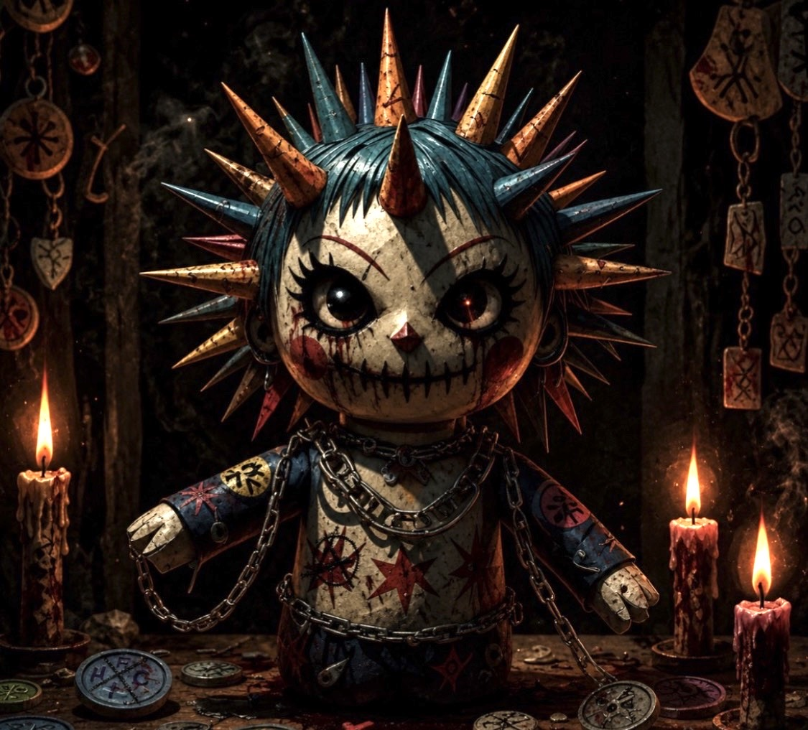
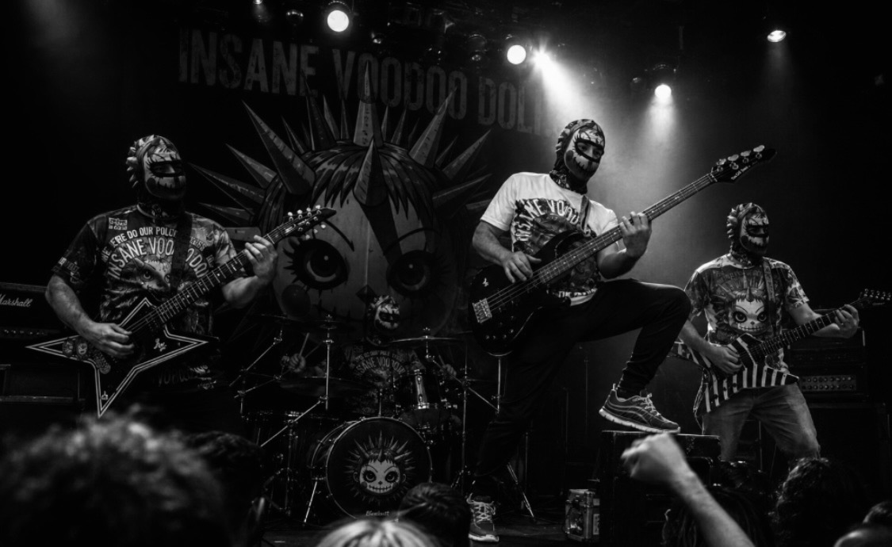

Insane Voodoo Doll
Benvenuti nel sito ufficiale degli Insane Voodoo Doll. Restate sintonizzati per ricevere tutti gli aggiornamenti sulle prossime uscite discografiche, i concerti dal vivo e il merchandise ufficiale.
Live & Noise

